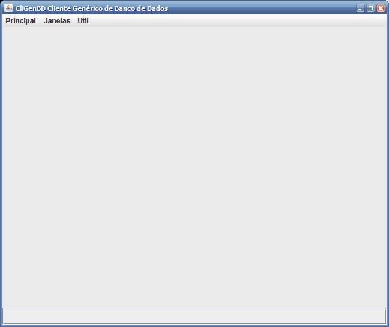
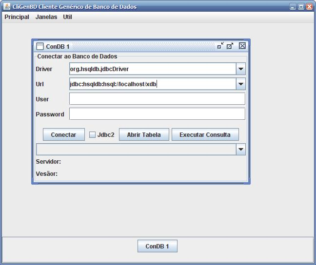
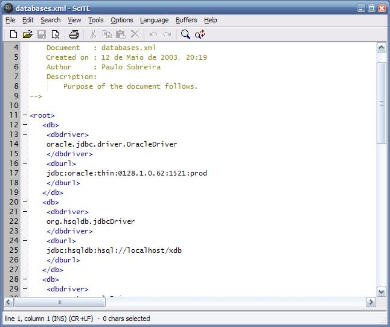
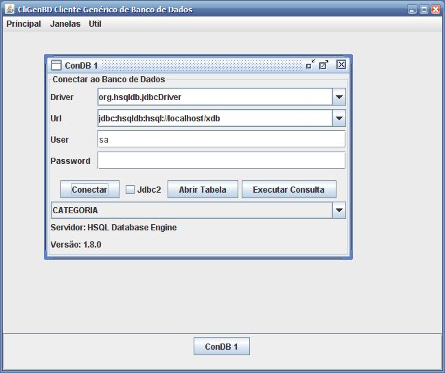
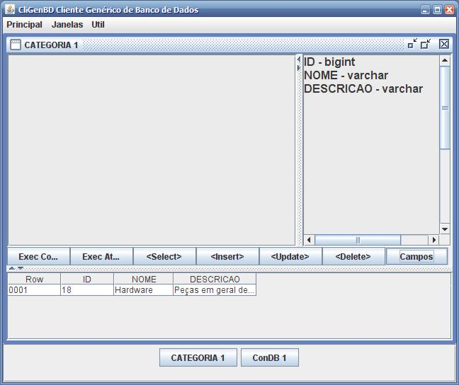
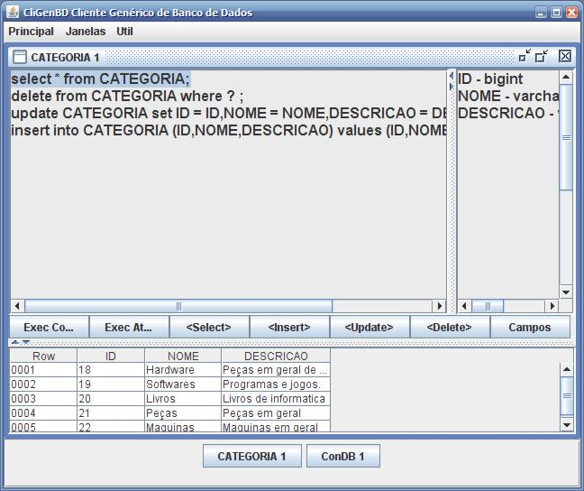
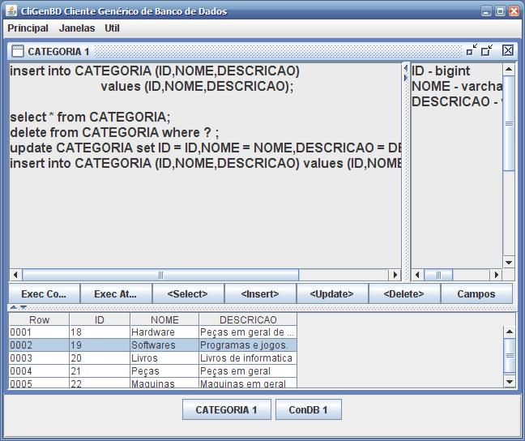
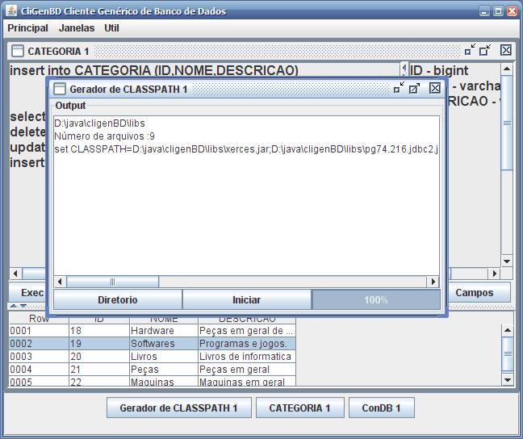

CliGenBD é um simples programa para fornecer acesso a visualização e manipulação de SQL em diversos SGBDs.

No menu principal é possível iniciar uma conexão usando os drivers e urls previamente cadastrados no arquivo databases.xml ou simplesmente digitá.
Para acesso a bancos de dados jdbc que não estejam no arquivo é necessário copiar o .jar do driver do banco para pasta libs e editar o arquivo run.bat para adicionar o novo jar no classpath.

Arquivo databases.xml que pode ser editado para alteração dos padrões e/ou adicionar mais drivers.

Após conectar ao BD com sucesso é demonstrado o nome do provedor e versão juntamente com todas as tabelas que o usuário logado tem acesso, é possível abrir a tabela selecionada ou executar uma consulta avulsa.

Uma tabela aberta significa apenas que o programa fez uma simples consulta mostrando o primeiro registro encontrado.
Qualquer Sql pode ser executado nesta janela. Ao clicar em campos, o programa verifica os metadados da tabela para descobrir a tipagem nativa dos campos.

Os botões contendo <Comando> geram templates SQL das ações. Um comando pode ser selecionado e executado com o atalho F5

Ao selecionar um ou mais campos na tabela de resultados e clicar no template de Update o sql gerado conterá os campos selecionados.
O Resultado selecionado na tabela também pode ser exportado para o programa de planilhas.

Para auxiliar na adição de novos drivers, o programa possui um gerador de classpath bastando apenas informar o diretor onde estão as libs.

 This
Web Page Created with PageBreeze Free
Website Builder
This
Web Page Created with PageBreeze Free
Website Builder